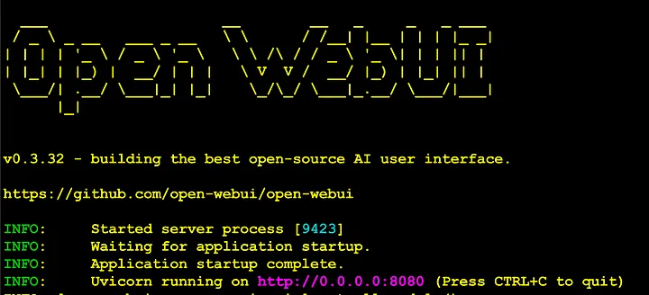
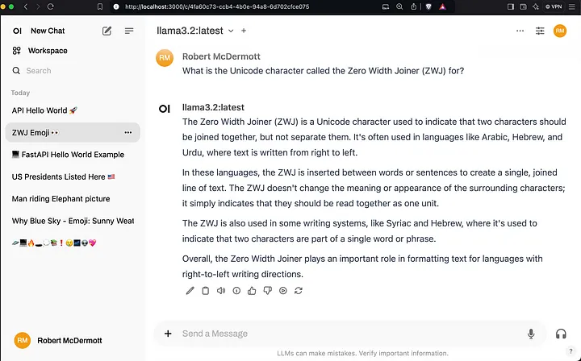
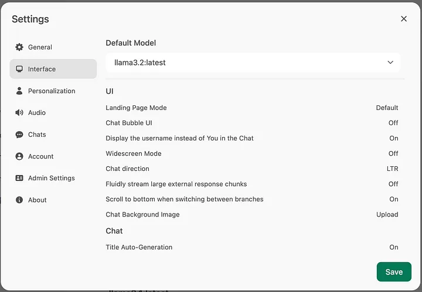
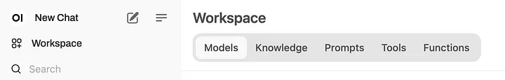
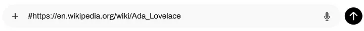

import ollama
stream = ollama.chat(
model='llama3.2',
messages=[{'role': 'user', 'content': 'Tell me a long story about your world'}],
stream=True,
)
for chunk in stream:
print(chunk['message']['content'], end='', flush=True)LLM
What is Ollama?
Source: https://blog.cubed.run/llm-zero-to-hero-with-ollama-913e50d6b7f0
Ollama is a platform that simplifies the process of running large language models (LLMs) privately on your own computers without relying on an external vendor. This provides more control, privacy, and flexibility.
Installing Ollama
Installing Ollama on your computer is very simple. Just visit the downloads page, select your operating system, and either download the installer and run it (macOS and Windows), or run the provided command on Linux.
After installing run in ollama –version in the terminal to see whether Ollama is running.
To download the Llama3.2 model, you only need to run the following command:
ollama pull llama3.2Now that we have a model, we can list the models that are available locally with the list command:
ollama listNow that we have a model downloaded, we are ready to run it.
Running Models
Non-interactive
To run the model, and ask it a question, we can give it a single, non-interactive prompt or start an interactive session where we can have an ongoing string of prompts.
To provide a single non-interactive prompt and receive a response use the run command followed by your prompt:
ollama run llama3.2 "Explain why the sky is blue in a single sentence" Interactive session
To start an interactive session where you can have a running conversation use the run command without a prompt:
ollama run llama3.2Here are the commands that we’ll use to download, run and ask Moondream to describe the above picture:
ollama pull moondream
ollama run moondream
>>> Describe this picture: /Users/robertm/Documents/picture-123.pngChecking which models are loaded
You can use the ps command to check what models are loaded into memory
ollama psNative Ollama API With Python
To use the Ollama native API with Python, you’ll need to install the “ollama” module:
pip install ollama Next, we’ll create a file named “ollama-chat.py” with the following contents:
Use OpenAi API
from openai import OpenAI
client = OpenAI(
api_key='boguskey',
base_url="http://localhost:11434/v1"
)
completion = client.chat.completions.create(
model="llama3.2",
temperature=1.0,
messages=[
{"role": "system", "content": "You are a helpful assistant."},
{
"role": "user",
"content": "Write a haiku about recursion in programming."
}
]
)
print(completion.choices[0].message.content)ChatGPT like Interface for Ollama with Open WebUI
Up to this point all of our use of LLMs via Ollama have been either via the command-line or scripts. In this section we’re going to add a ChatGPT like web UI to make using Ollama much easier to use and to provide a lot of additional functionality. For this we’ll be using the excellent Open WebUI that provides a ChatGPT like user interface with features not even available with a ChatGPT Plus subscription.
Installing Open WebUI
pip install open-webuiThat will download the package and all its dependencies it needs to run. After all the packages are installed, you can just start it up and start using it. Run the following command:
WEBUI_AUTH=False python open-webui serveUsing Open WebUI
After you’ve installed Open WebUI via one of the above methods, open up a new web browser tab and navigate to the following URL:
http://127.0.0.1/8080
Select a model from the “Select a Model” drop down at the top of the window and set it as a default. Llama3.2:latest was selected and set as the default in the above screenshot. At this point you can just start prompting it like you would ChatGPT.
Open WebUI Settings
If you click on the “User” profile in the lower left of the app, you can access the “settings” interface to customize the system to suit your needs:

The Open WebUI Workspace
The “Workspace” is accessible via the icon in the upper left of the application. It will let you work with models, even create new ones similar to how we did with the Ollama model files in a previous section, let you create a knowledge base of documents that the LLMs can consult, and create a curated set of prompts that can be accessed quickly with a “/” command. You can even create your own tools and functions using Python that the LLMs can call in the Tools and Functions sections:

The Knowledge portion of the workspace allows you to curate collections of documents that you can query with an LLM by using the “#” symbol and picking the collection to consult. You can optimize how to processes documents (chunk size, embedding model, etc.) in the Open WebUI admistrative settings dialog.
Pulling in content from web pages
If you want to pull in some information from a web page into the LLM’s context, use a “#” character followed by a URL like this:

Open WebUI will read the content of the URL you provided into the LLM’s context window and use it to answer your questions.